|
Roda on Tour: Helden - Roda (0-7) |
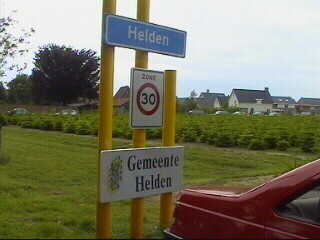
In het kader van de PR-actie Roda On Tour werd
er
vanavond tegen Helden gespeeld.
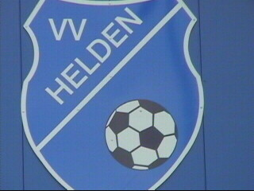
Het logo van de plaatselijke FC.
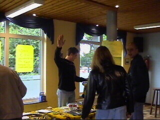
Robbie E. en Jochen R. hadden een standje.
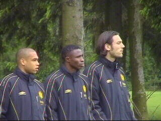
Het is fijn langs de lijn....
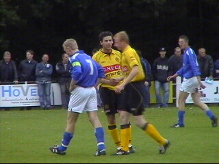
Vandenbroek scoorde de tweede van de zeven...
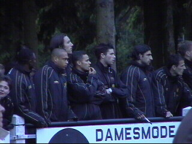
Veel A-spelers stonden ook in de tweede helft
langs de
lijn. In het veld zagen we o.a. Rudge,
Lachambre,
Vandenbroek, Van Mieghem, Tos,
Collinet, Hakim,
Baslanti, Roorda, Soetaers,
Jongen, Brouwers.
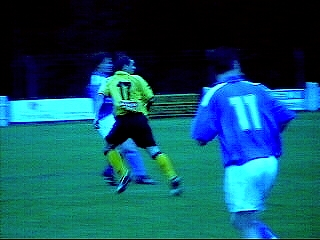
Tom kwam in de tweede helft en scoorde.
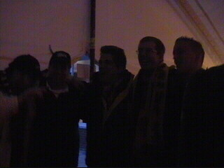
Onduidelijke foto van feestende Rodafielen.
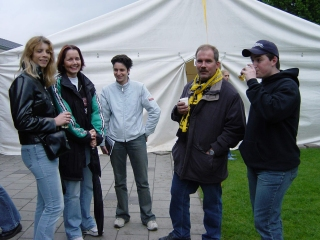
Jaaa, Montfort en Nuth zijn er ook weer bij!
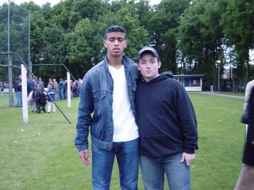
Eric B & Rakim :-)
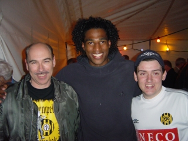
De speler in het midden was op proef bij Roda
en heet Piere Tos.
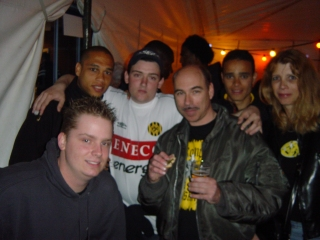
Brazilllll, jalalalalalalaaaaa
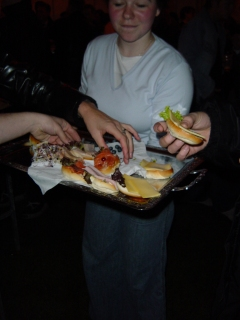
Haring, zalm, pâté, ham, de hostessen
van Helden hadden alles aan boord.
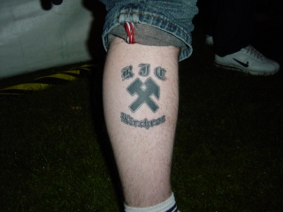
Deze is voor de volgende Voice!